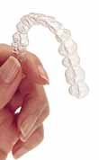

|
|
- 05.07.2001
> Otoinþa teknolojisinin týptaki yeni uygulamalarý Eðri
diþleri düzeltmek için metal tel yerine þeffaf plastikten
diþ doðrultma kýlýflarý imalatý:
Invisalign (ABD) firmasý anlaþmalý olduðu diþçilerden hastanýn
diþ kalýbýný almaktadýr. Negatif diþ kalýbýndan pozitif
diþ modeli elde edildikten sonra bu model bir 3D sayýsallaþtýrýcýyla
hassas bir þekilde taranarak hastanýn eðri diþlerinin 3D
modeli bilgisayara aktarýlýr. Daha sonra diþlerin olmasý
gereken düzgün þekli ve bu þekle ulaþýncaya kadar gerçekleþecek
olan ara durumlar özel geliþtirilmiþ bir CAD yazýlýmý ile
hesaplanmaktadýr. Yaklaþýk iki haftada bir deðiþtirlecek
olan hastaya özel bir seri kýlýfýn termoform kalýplarý (pozitif
diþ modelleri) SLA cihazlarý ile direkt olarak imal edilmektedir.
Her düzeltici kýlýf, termoform kalýplama ile þeffaf, medikal
uyumlu bir plastikten üretilmektedir. 2001 ilk yarýyýlý
itibariyle bu teknoloji yalnýz ABD ve Kanada'da kullanýlmaktadýr.
Halen 10 adet SLA 7000 cihazý kullanan Invisalign firmasý
bu uygulamalar için 3D Sytems firmasýndan, liste fiyatý
700,000$ civarýnda olan, 39 adet daha SLA 7000 sipariþi
vererek, 3D Systems firmasýndan þimdiye kadar en çok sayýda
sipariþ veren firma konumuna gelmiþtir... Kullanýlan özel
yazýlým Geomagic firmasý tarafýndan geliþtirilmiþtir: www.geomagic.com/advantage/healthcare/invisalign-index.php3
Her tedavi ortalama 20 , en fazla ise 60 çift farklý düzeltici
kýlýf gerektirmektedir. Termoform kalýbý imalarýnda, bu
iþe uygun olarak özelleþtirilmiþ ve 3 kat daha hýzlý bir
SLA 7000 sistemi kullanýlmaktadýr. Termoform iþleminin basýnç
ve sýcaklýðýna dayanabilecek, bu uygulamaya özel bir fotopolimer
malzeme de geliþtirilmiþ ve kullanýlmaktadýr.
- 18.06.2001
> Z Corp.'dan ücretsiz hýzlý prototip imalatý
ABD/Boston tabanlý hýzlý prototip imalatý yapan cihazlar
üreten Z Corp. Firmasý tanýtým amaçlý ücretsiz prototip
imalat imkaný sunuyor. Belli bir büyüklüðü aþmamak kaydýyla
3D tasarladýðýnýz herhangi bir parçanýn .stl dosyasýný firmaya
gönderirseniz size bir iki hafta içinde prototipi ulaþtýrýyorlar.
Yapmanýz gereken tek þey http://www.zcorp.com/zoupon/newsletter.shtml
adresini ziyaret ederek formu doldurmanýz ve ardýndan e-posta
ile .stl dosyasýný göndermeniz. Firmanýn yeni ürettiði Z406
sistemi (http://www.zcorp.com/newsletter/content/latest_news.htm),
bir önceki ürünü Z402'ye nazaran 3 kat daha hýzlý. Hem de
standart HP ink-jet kafalarýný kullanýyor. Zaten Firma önceki
sistemin de rakiplerinden 10 kat daha hýzlý olduðunu iddia
ediyordu. (tabii ki hýz herþey deðildir, hassasiyet, yüzey
kalitesi, ve malzeme özellikleri de birçok uygulama için
çok önemlidir) Z Corp "3D printing" teknolojisi
kýsaca þöyle iþler: Katmanlar halinde yayýlan plastik tozlarýnýn
belirli yerlerine ink-jet yazýcýlardaki memeler vasýtasýyla
yapýþtýrýcý püskürtülerek parça inþa edilir. Yapýþtýrýcý
deðmeyen tozlar inþa sýrasýnda destek görevini üstlenir
ve bir sonraki imalatta yeniden kullanýlabilirler.
|
|
|
|
TurkCADCAM.net > Türkiye'nin yeni ürün tasarım, geliştirme, CAD/CAM/CAE, CNC, kalıp ve imalat teknolojileri portalı |
*****
Sektörün profesyonel bilgi ve işbirliği platformu ***** |
|
|
|
|
|
|